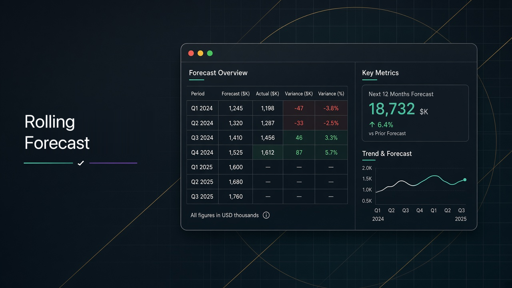
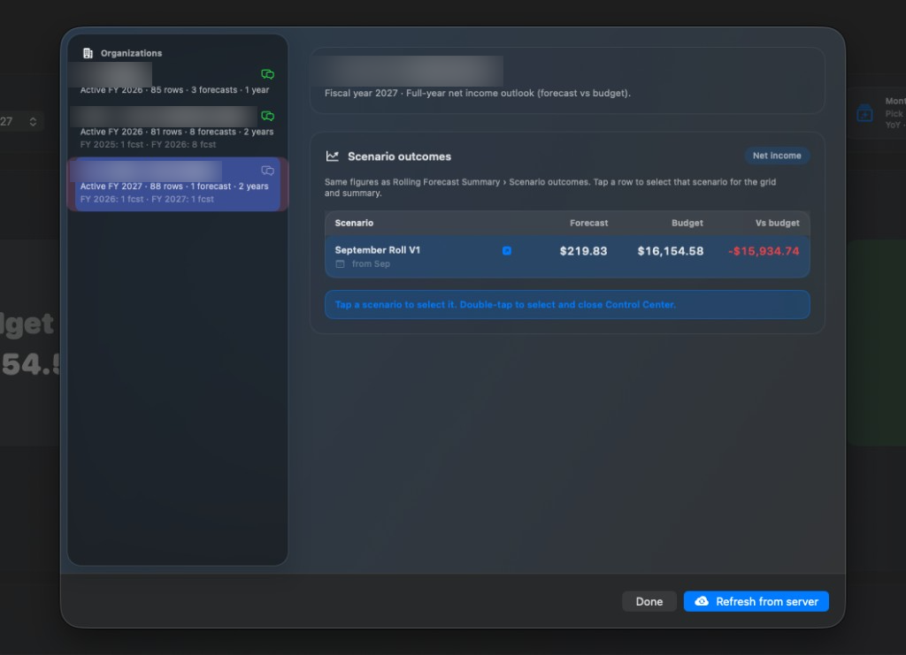
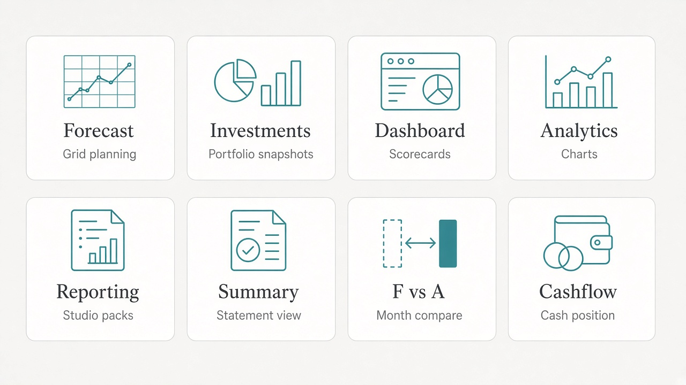
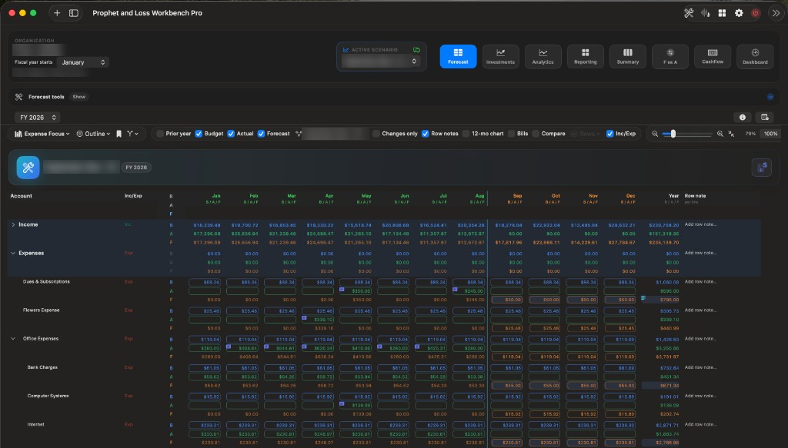
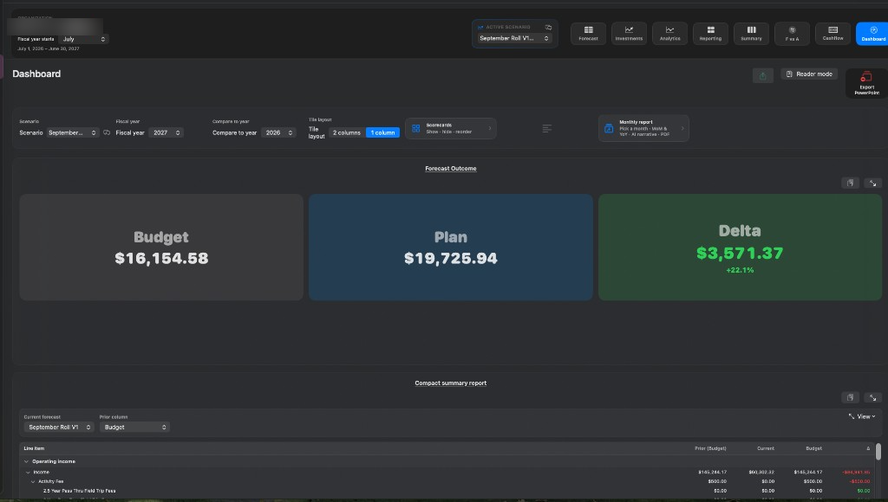
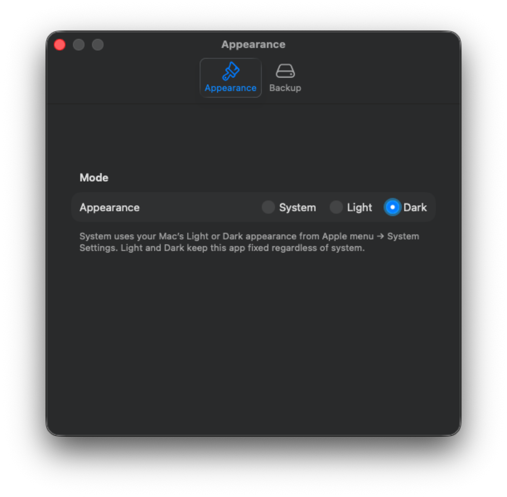

macOS User Manual
Rolling Forecast
Plan budgets, import actuals, and steer rolling forecast scenarios—privately on your Mac.
1. Welcome
Rolling Forecast is a finance and planning workbench for organizations that need fiscal-year budgets, monthly actuals, and scenario-based rolling forecasts—without uploading your books to a vendor cloud.
Your organization data lives in the app sandbox on your Mac. Backups are zip files you control; optional restore from a URL you configure is pull-based, not a hosted database service.
This manual is written for Mac end users in finance and planning roles. A read-only iPad companion, Rolling Forecast Reports, also exists; this guide documents the macOS experience only.
Keep one recent zip backup before large imports or structural hierarchy changes. See Tips, privacy & backup.
2. Core concepts
These terms appear throughout the app and this manual.
| Term | Meaning |
|---|---|
| Organization | A named entity that holds fiscal years, budgets, actuals, scenarios, and related imports. You switch organizations from the Mac sidebar. |
| Fiscal year start month | The calendar month that begins each fiscal year for the organization (for example, July for a July–June year). |
| Fiscal year budget | The planned amounts for one fiscal year, organized by the account hierarchy and months. |
| Account hierarchy | The outline of statement sections, subtotals, and detail lines that drives the Forecast grid and reporting scopes. |
| Budget | Planned values (B) for accounts by month. Distinct from actuals and from rolling forecast scenario values. |
| Actuals | Recorded results (A) by month, typically imported from spreadsheets or other sources after the month closes. |
| Rolling forecast scenario | A named forecast case with its own start month and forecast values (F). You can maintain several scenarios and choose which one the grid uses. |
| Start month / actuals-led vs forecast window | The scenario start month divides months that lean on actuals (or closed results) from the forward forecast window you are projecting. |
| Full year closing model | How the app fills or closes the full fiscal year when combining budget, actuals, and forecast so annual totals remain coherent. |
| Known forecast expenses | Named expense overlays you attach to a scenario so specific costs stay visible and adjustable without rewriting the whole grid. |
| Plan vs rolling blend | How budget plan and rolling forecast combine when presenting outcomes (for example on the dashboard and summary). |
| Net income | The bottom-line result used in scenario outcomes and comparisons (forecast, budget, and variance vs budget). |
| Hidden rows | Account rows suppressed from the grid view so you can focus on the lines that matter for a given review. |
| Outline bookmarks | Saved expand/collapse presets for the account outline so you can jump back to a favorite layout. |
| Organization password | Optional password that must be entered to open an organization. Its contents are saved encrypted, and the password cannot be recovered. |
| Edit access | Decides who can change an organization, separately from who can open it. Each organization is Editor (you can change it on this Mac), Read-only (you can review it but not change it), or Open (anyone with a copy can change it). You are the editor of organizations you create. |
Edit key file (.rollingkey) |
A small file that gives edit access to one organization. Editors export it from Edit Access… and hand it to co-editors, who drag it onto the main window. |
| Backup zip | A zip archive of organization data written to a folder you choose, or restored from a file / configured URL. |
Organization package (.rollingorg.json) |
An export/import package for handing off or backing up a single organization between installs. Editors export either a read-only copy (signed, so recipients can tell it came from an editor) or an editable copy (includes the edit key). |
3. First launch & getting started
On launch you may see the Rolling Forecast splash / About screen, then the main window.
Startup options
In Settings → Startup, choose what happens automatically when the app opens:
- None — Open straight into the last workspace.
- Ask restore from URL — Prompt to restore from the backup zip URL configured under Backup. Cannot run together with Control Center at launch.
- Environment Control Center — Open the Control Center so you can pick an organization and scenario outcome before diving into the grid.
Recommended first-time path
- Create an organization and set its fiscal year start month.
- Open the Environment Control Center (startup option or from Backup / menu) and review scenario outcomes when data exists.
- Import a budget (or build lines) for the fiscal year you care about.
- Select the working fiscal year in the header.
- Create a rolling forecast scenario in the Forecast workbench; set its start month.
- Import actuals for closed months so the grid can show B / A / F clearly.
- Switch to Dashboard or Forecast summary to validate net income outcomes before sharing.

Anyone can create, import, and export organizations. You are the editor of the organizations you create. Organizations someone shared with you as a read-only copy open for review only: importing budgets and actuals, changing scenarios, and editing structure need that organization’s edit access. See Sharing & protecting organizations.
4. The Mac shell
The main window is built around a left Organizations sidebar, a workspace switcher, and a header with scenario and fiscal-year controls.

Workspace switcher
- ForecastBudget / actuals / forecast grid and Forecast tools.
- InvestmentsMonthly portfolio snapshots (Fidelity-style imports).
- DashboardScorecards, PowerPoint export, annual scorecard PDF.
- AnalyticsDeep chart analysis, deck export, copy chart.
- ReportingReporting Studio: charts → scorecards → packs → PowerPoint.
- SummaryForecast summary statement (Prior / Current / Budget / Δ).
- F vs AForecast vs actual analysis for a compare month.
- CashflowBeginning cash, balance sheet, modeler, operating fund flags.
Header controls
- Scenario — Active rolling forecast scenario used by the grid and many scorecards.
- Fiscal year — Working year for edits and most views.
Read-only organizations show an eye icon in the sidebar and a Read-only strip above the workspace with an Unlock Editing… button. If Open read-only organizations in Analytics is on (Settings → Access), the workspace switcher for those organizations is limited to analytics-focused areas so navigation stays on charts and related review surfaces.
5. Environment Control Center
Use the Control Center as a launchpad when you manage several organizations or need a quick net-income readout before opening the grid.
- Organization list — Select which org is active.
- Scenario outcomes — For each scenario, review Forecast, Budget, and Vs budget net income.
- Select scenario — Apply the scenario you want to work with.
- Double-click (or double-tap trackpad) — Close the Control Center and continue into the main shell.
- Refresh from server — Pull the backup zip from the URL saved in Backup settings (same link used by the restore-from-URL startup prompt).
Configure the restore URL once under Settings → Backup; both Control Center refresh and the startup restore prompt use that saved link.
6. Forecast workspace
Forecast is the primary planning surface: an account hierarchy grid with budget (B), actuals (A), and forecast (F) columns by month.

Grid basics
- B / A / F — Toggle amount types so you can focus on plan, results, or forecast values.
- Compare / variance — Surface differences between selected bases (for example forecast vs budget).
- Zoom — ⌘+ / ⌘− / ⌘0 (reset); ⌘⇧9 fits the grid. You can also drag the zoom slider or hold Shift while scrolling the mouse wheel.
- Outline bookmarks — Save and restore expand/collapse layouts for large models.
- Notes — Attach notes to rows or cells where editing is allowed.
- Locks — Scenario or cell locks protect values while you continue editing elsewhere (managed from the workbench and grid tools).
Forecast tools
Open Forecast tools from the Forecast workspace chrome. Common actions:
After any import, spot-check subtotals and a few key detail lines before you export or present. Use Fix import tree if the outline looks flattened or mis-parented.
7. Forecast workbench & known expenses
The Forecast workbench is where you manage rolling forecast scenarios for the selected organization and fiscal year.
Scenarios
- Create / rename / duplicate / delete scenarios as your planning cases evolve.
- Advance start month — Move the boundary between actuals-led months and the forecast window as the year progresses.
- Lock — Protect a scenario from accidental edits.
- Use in grid — Make the scenario active for the Forecast workspace and dependent views.
Known forecast expenses
Known expenses are named overlays on a scenario. Use them for commitments you want to track explicitly (for example fixed contracts) without burying them only in detail lines. They appear in Forecast tools, the Dashboard Known Expenses scorecard, and related Excel exports.
Creating, duplicating, and deleting scenarios, and advancing start months, require edit access to the organization.
8. Budget Builder & Reality Check
Budget Builder
Open Budget Builder from Forecast tools when you need a structured pass over the plan. Work through the guided steps, then export an Excel punch list of builder outputs for offline review or handoff.
Reality Check
Reality Check reviews the current budget / forecast coherence and produces:
- An Excel punch list of findings to work through.
- A narrative PDF suitable for sharing a written assessment.
Run Reality Check after major imports or before a board package so issues surface before Dashboard and Summary exports.
9. Forecast summary
The Summary workspace is a statement-style readout tuned for leadership review.

- Prior vs Current vs Budget vs Δ — Side-by-side statement columns for quick variance reading.
- Scenario outcomes — Net income context for the active scenario.
- Bookmarks — Jump to saved outline focuses.
- Appearance — Summary appearance scheme (also available from Settings).
- Copy image — Capture the visible summary for slides or email.
10. Forecast vs actual (F vs A)
Use F vs A when you need a focused month comparison between forecast and actuals.
- Choose the compare month.
- Optionally include reference scenario months for additional context.
- Export to Excel when you need a numeric trail for audit or email.
11. Dashboard
Dashboard assembles scorecards for the working organization, fiscal year, and scenario. Customize which cards appear and in what order for on-screen review and PowerPoint export.

Scorecards
| Scorecard | What it shows |
|---|---|
| Forecast Outcome | Primary outcome view for the active scenario. |
| Compact summary | Condensed summary report card. |
| Comparison by month | Month-by-month comparison (including prior-year context when available). |
| Cumulative YTD | Cumulative year-to-date actual-then-forecast vs budget. |
| Income / expense mix pies | Mix composition pies for income and expense. |
| Income / expense waterfalls | P&L-style waterfall bridges (aligned with Analytics waterfall settings). |
| Known Expenses | Known forecast expense overlays for the scenario. |
| Attendance | Attendance trend when attendance data is imported. |
| Portfolio | Portfolio investments trend. |
| Payments | Payments by payee / name (after monthly payments import). |
| Scenario brief | Short narrative briefing for the active scenario. |
| Budget Attention | Highlights areas that need budget attention. |
| Cross-year sanity | Cross-year consistency checks (Excel export available). |
Exports
- Customize — Toggle and reorder scorecards for your review pack.
- PowerPoint — Export selected scorecards as a .pptx deck (Save dialog on Mac).
- Annual scorecard PDF — Produce a PDF package of the annual scorecard set.
12. Analytics
Analytics is the deep chart workbench. Work through its sections to change scope, period, and chart style. Preferences are remembered for your next visit.
- Explore P&L-style breakdowns, trends, and related analysis sections (including payments and attendance when data exists).
- Copy chart — Capture the current chart as an image for paste into other apps.
- PowerPoint deck — Build a presentation from the visuals on screen, following the app’s title and section template.
13. Reporting Studio
Reporting Studio is the authoring path from individual visuals to a shareable deck:
- Charts — Create performance trends, variance bars, waterfalls, or KPI tiles.
- Scorecards — Save chart selections into reusable scorecards.
- Packs — Assemble scorecards into ordered packs.
- PowerPoint — Export the pack (or selected scorecards) to .pptx.
14. Cashflow
The Cashflow workspace connects operating results to cash position:
- Beginning cash — Set the opening cash balance for the model.
- Balance sheet — Review related balance-sheet context used by cash views.
- Modeler — Project cash effects from operating activity and related inputs.
- Operating fund flags — Mark funds that participate in operating cash treatment.
15. Investments
Investments stores monthly Fidelity-style snapshots of portfolio balances and related series. Import snapshot files, review trends in the Investments workspace, and export when you need an offline copy. Portfolio trends also appear on the Dashboard when data is present.
16. Imports & exports
Imports
| Import | Where | Purpose |
|---|---|---|
| Budget | Forecast tools | Load plan amounts into the fiscal year hierarchy. |
| Actuals | Forecast tools | Load monthly actuals for closed months. |
| History year | Forecast tools | Add or refresh a prior fiscal year for comparisons. |
| Monthly payments | Forecast tools | Feed payments-by-payee analytics and dashboard. |
| Teller | Forecast tools | Offerings / Teller series for overlays and comparisons. |
| Attendance | Forecast tools | Attendance trend scorecards and analytics. |
| Investments snapshots | Investments | Monthly portfolio balances. |
| Organization package | Sidebar toolbar, New organization, or drag onto the window | Import a .rollingorg.json package. If the organization is already in your library, choose Replace your copy or Keep both. |
| Edit key file | Drag onto the window, Edit Access…, or Settings → Access | Add edit access from a .rollingkey file. |
| Backup zip restore | Settings → Backup / startup | Restore all data from a zip file or configured URL. |
Exports
| Export | Where | Output |
|---|---|---|
| Budget | Forecast tools | Budget spreadsheet. |
| Forecast Excel | Forecast tools | .xlsx of grid / known expenses and related sheets. |
| HTML pack | Forecast tools | Browsable HTML snapshot package. |
| Budget Builder punch list | Budget Builder | Excel punch list. |
| Reality Check | Reality Check | Excel punch list + narrative PDF. |
| F vs A Excel | F vs A | .xlsx of the compare-month analysis. |
| Cross-year sanity Excel | Dashboard | .xlsx of sanity table with outline groups. |
| Dashboard PowerPoint | Dashboard | .pptx of selected scorecards. |
| Annual scorecard PDF | Dashboard | PDF scorecard package. |
| Analytics PowerPoint | Analytics | .pptx deck from analytics visuals. |
| Reporting Studio PowerPoint | Reporting | .pptx from packs / scorecards. |
| Summary / chart images | Summary, Analytics, Forecast | Clipboard images for slides or email. |
| Organization package | Sidebar right-click → Export organization… | .rollingorg.json handoff / backup of one org, as a read-only or editable copy. |
| Edit key file | Sidebar right-click → Edit Access… | .rollingkey file that gives a co-editor edit access. |
| Backup zip | Settings → Backup | Zip of organization data to your chosen folder. |
| Investments export | Investments | Offline copy of portfolio snapshots. |
17. Sharing & protecting organizations
Each organization has two independent protections: a password that controls who can open it, and edit access that controls who can change it. Both travel with the organization in exports, zip backups, and duplicates.
Password to open
- Right-click an organization in the sidebar and choose Set Password…, Change Password…, or Remove Password…. You can also add a password when you create an organization.
- A protected organization is saved encrypted and shows a lock in the sidebar. Select it and enter the password to open it; Lock Now closes it again.
- The password is never stored and cannot be recovered. Set a hint, and keep a zip backup made before the password was added.
Edit access
An organization is in one of three states on each Mac:
| State | What it means |
|---|---|
| Editor | This Mac holds the organization’s edit key, so you can change it. You are the editor of every organization you create. |
| Read-only | You can open and review everything but not change it. The sidebar shows an eye icon and the workspace shows a Read-only strip with Unlock Editing…. |
| Open | No edit protection: anyone who has a copy can change it. Organizations from before edit access existed may be Open. |
The edit key is saved in your Keychain (iCloud Keychain when available, so your other Macs can edit too). You never have to handle it unless you want to share it.
Protecting an existing organization
- Right-click the organization and choose Protect Editing… (or click Protect… next to it in Settings → Access).
- If it is password protected and locked, enter its password first.
- Click Protect Editing. You become the editor.
Copies you shared before protecting it stay editable for whoever has them. Send a fresh read-only copy to replace them.
Sharing an organization
Right-click the organization and choose Export organization…. For an organization you edit, choose what recipients can do:
- Read-only copy (recommended) — Recipients can review everything but not change it. The file is signed, so the app can tell it came from an editor and wasn’t altered afterwards.
- Editable copy — Includes the edit key. Whoever imports it can change the organization and pass that ability on. Send it only to co-editors you trust.
A password-protected organization still needs its password to open, whichever copy you send.
Giving someone edit access later
Right-click the organization and choose Edit Access…:
- Export Key File… — Saves a
.rollingkeyfile for a co-editor. - Edit password — Set a password that unlocks editing. It must be different from the password that opens the organization, so people who can open it can’t automatically edit it.
- More options — Reset Edit Access… (makes every key file, editable copy, and edit password handed out so far stop working), Stop Editing on This Mac…, or Let Anyone Edit… (removes edit protection).
Unlocking editing on your Mac
- Drag the
.rollingkeyfile anywhere onto the main window, or click Unlock Editing… and drop it there or choose it. - Or enter the edit password in Unlock Editing…. Leave Remember on this Mac on to keep editing after you quit.
- Importing an editable copy gives you edit access automatically.
Receiving an updated copy
When you import an organization that is already in your library, choose Replace your copy to bring in the new version, or Keep both to add it as a separate organization. The sheet shows whether the file was exported by an editor. A read-only organization can only be replaced by a file its editor exported, so nobody can pass off a changed version as the original. If a file was altered after an editor exported it, the app warns you before importing, and any edit key inside it is ignored.
If the only copy of an edit key is lost (for example, a Mac is erased and iCloud Keychain was off), nobody can edit that organization again. Editors should keep an exported .rollingkey file somewhere safe.
18. Settings
Open Settings with ⌘, or Rolling Forecast → Settings….

| Area | What you configure |
|---|---|
| Startup | None / Ask restore from URL / Environment Control Center. |
| Appearance | App theme and related visual preferences. |
| Access | Edit access for each organization (Editor / Read-only / Open, with Manage, Unlock, or Protect), Add Edit Key File…, and Open read-only organizations in Analytics. |
| Backup | Backup folder, zip now, restore, prompt on quit, restore URL, open Control Center. |
| About | Product branding, version, and related links. |
| Forecast look | Grid color scheme and account column styling (also from Forecast tools). |
| Summary appearance | Statement styling for Forecast summary. |
| Currency | Symbol, decimals, and grouping for displayed amounts. |
19. Keyboard shortcuts
| Shortcut | Action |
|---|---|
| ⌘, | Open Settings |
| ⌘+ or ⌘= | Zoom in (Forecast grid) |
| ⌘− | Zoom out (Forecast grid) |
| ⌘0 | Reset zoom |
| ⌘⇧9 | Fit grid |
| Shift + scroll | Zoom Forecast grid with the mouse wheel |
Additional shortcuts appear next to commands in macOS menus when available.
20. Tips, privacy & backup
Working tips
- Always confirm the active organization, fiscal year, and scenario before interpreting Dashboard or Summary numbers.
- Advance the scenario start month as actuals land so the rolling window stays honest.
- Use outline bookmarks when presenting so you reopen the same collapsed layout every time.
- Pair Dashboard maximize / full scorecards with Analytics copy chart when you need both a pack and a single slide-ready image.
Privacy
Organization data remains on your Mac in the app sandbox. The product does not require a vendor-hosted finance database. Optional restore-from-URL only downloads a zip from a location you configure. Edit keys are kept in your Keychain; they are not included in zip backups.
Backup best practices
- In Settings → Backup, choose a durable destination folder (for example an external drive or synced folder you trust).
- Run Back up now as zip before large imports, hierarchy fixes, or org deletion.
- Optionally enable prompt on quit so you are reminded to back up when closing the app.
- Store occasional
.rollingorg.jsonexports for single-organization handoff separately from full zip backups. - Keep an exported
.rollingkeyfile for each organization you edit. Zip backups don’t include edit keys, so restoring onto a new Mac needs the key file (or iCloud Keychain) to edit again. - Test a restore into a safe environment before you rely on a backup for disaster recovery.
Restoring a zip replaces local organization data with the archive contents. Confirm you have selected the correct file before proceeding.
21. Support & legal
- Privacy policy: https://coxon64.github.io/Rolling-Forecast/privacy.html
- Support: https://coxon64.github.io/Rolling-Forecast/support.html
For product questions, contact your deployment administrator or the publisher listed on the Support page.
Copyright © 2026 Mike Coxon. All rights reserved. Not affiliated with Apple Inc. Fidelity is a trademark of its respective owner; references to Fidelity-style snapshots describe file format familiarity only.